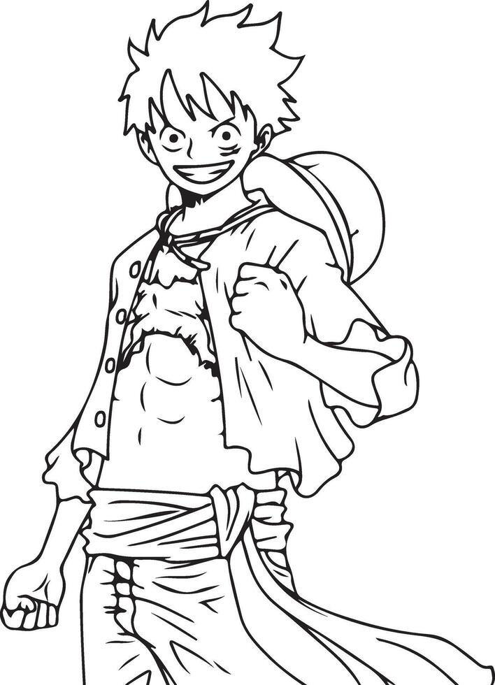

Newton Mogaka · Nairobi, Kenya
Systems Developer
With specialty in
IT & civil engineering student. I spend time designing and building solutions to problems. I animate sometimes and write occasionally too checkout my work, projects, and papers below. Feel free to reach out.
Active Builds
- LIVE PricePoa WhatsApp-native AI agent for location-aware grocery price comparison across Kenyan supermarkets. 2026
- LIVE ChaiMetrics Yield prediction and relational farm-factory analysis for 240 KTDA smallholder tea farms. 2026
- IN BUILD TaPesa NFC tap-to-pay M-Pesa app for Android, built on host card emulation and ECDSA-backed key storage. 2026
- IN BUILD Accountability Civic accountability platform tracking Nyeri County governance, budgets, and elected officials. 2025–26
- PROTOTYPE Mnemosyne GNN-ranked long-term memory for LLM agents, working through cold-start via persona bootstrapping. 2026
- PROTOTYPE Chronos Four-stage middleware pipeline — ingest, process, index, inject — for real-time AI context. 2025
Work
ChaiMetrics
An ML platform for KTDA smallholder tea farmers spanning 240 farms and 15 factories. Yield forecasting runs on gradient-boosted trees and SARIMA time series, while a graph neural network models the farm-factory relational structure directly — treating collection routes and processing dependencies as a graph rather than flattening them into tabular features. An LLM narration layer translates model output into plain-language guidance for farmers with no ML background.
View document →
PricePoa
A grocery price comparison agent that lives entirely inside WhatsApp — no app to install. Send a shopping list, get back the cheapest nearby basket across supermarkets, ranked by distance and total cost. Built on a scraping pipeline feeding a location-aware pricing index, designed for a market where WhatsApp is the default interface for almost everything.
View document →RECON
A civic accountability platform tracking Nyeri County governance — budgets, NG-CDF allocations, MPs, and the Governor's office. A graph neural network models relationships between officials, projects, and spending; a retrieval-augmented chatbot layer sits on top, answering questions and surfacing proactive briefings from the underlying data.
View document →Papers
Malware
I study malware and zero-day exploits.
- Mini Shai Hulud Learn More →
- Mini Shai Hulud Learn More →
- Worms Learn More →